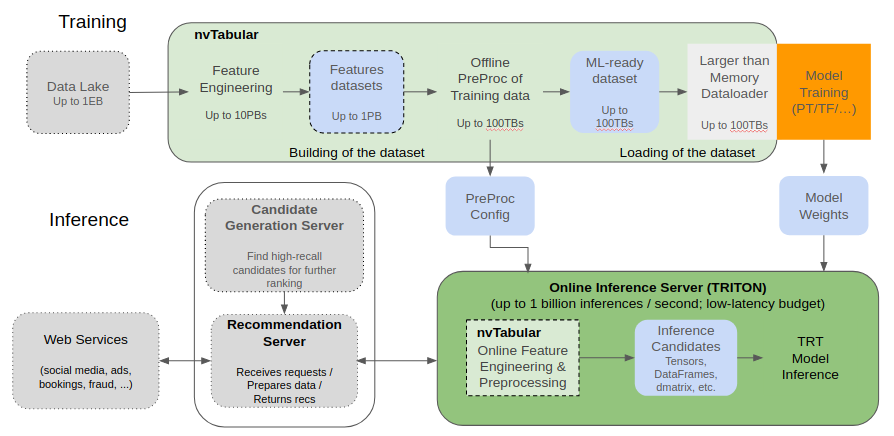

How it Works

With the transition to v0.2 the NVTabular engine uses the RAPIDS Dask-cuDF library which provides the bulk of the functionality, accelerating dataframe operations on the GPU, and scaling across multiple GPUs. NVTabular provides functionality commonly found in deep learning recommendation workflows, allowing you to focus on what you want to do with your data, not how you need to do it. We also provide a template for our core compute mechanism, Operations, or ‘ops’ allowing you to build your own custom ops from cuDF and other libraries.
Follow our getting started guide to get NVTabular installed on your container or system. Once installed you can setup a workflow in the following way:
import nvtabular as nvt
workflow = nvt.Workflow(
cat_names=["user_id", "item_id", "city"],
cont_names=["age", "time_of_day", "item_num_views"],
label_name=["label"]
)
With the workflow in place we can now explore the library in detail.
Operations
Operations are a reflection of the way in which compute happens on the GPU across large datasets. At a high level we’re concerned with two types of compute: the type that touches the entire dataset (or some large chunk of it) and the type that operates on a single row. Operations split the compute such that the first phase, which we call statistics gathering, is the only place where operations that cross the row boundary can take place. An example of this would be in the Normalize op which relies on two statistics, the mean and standard deviation. In order to normalize a row, we must first have calculated these two values, and we use a Dask-cudf graph to compute this part of the op.
The second phase of operations is the apply phase, which uses the statistics created earlier to modify the dataset, transforming the data. Notably we allow for the application of transforms not only during the modification of the dataset, but also during dataloading, with plans to support the same transforms during inference.
# by default, the op will be applied to _all_
# columns of the associated variable type
workflow.add_cont_preprocess(nvt.ops.Normalize())
dataset = nvt.Dataset("/path/to/data.parquet")
# record stats, transform the dataset, and export
# the transformed data to a parquet file
proc.apply(dataset, shuffle=nvt.io.Shuffle.PER_WORKER, output_path="/path/to/export/dir")
Dask-cuDF does the scheduling to help optimize the task graph providing an optimal solution to whatever configuration of GPUs you have, from a single GPU to a cluster of many.
A higher level of abstraction
NVTabular code is targeted at the operator level, not the dataframe level, providing a method for specifying the operation you want to perform, and the columns or type of data that you want to perform it on.
We make an explicit distinction between feature engineering ops, which create new variables, and preprocessing ops which transform data more directly to make it ready for the model to which it’s feeding. While the type of computation involved in these two stages is often similar, we want to allow for the creation of new features that will then be preprocessed in the same way as other input variables.
Two main data types are currently supported: categorical variables and continuous variables. Feature engineering operators explicitly take as input one or more continuous or categorical columns and produce one or more columns of a specific type. By default the input columns used to create the new feature are also included in the output, however this can be overridden with the [replace] keyword in the operator. We extend this to multihot categoricals with the transition to v0.3 in addition to providing specific functionality for high cardinality categoricals which must be treated differently due to memory constraints.
Preprocessing operators take in a set of columns of the same type and perform the operation across each column, transforming the output during the final operation into a long tensor in the case of categorical variables or a float tensor in the case of continuous variables. Preprocessing operations replace the column values with their new representation by default, but again we allow the user to override this.
# same example as before, but now only apply normalization
# to `age` and `item_num_views` columns, which will create
# new columns `age_normalize` and `item_num_views_normalize`
workflow.add_cont_preprocess(nvt.ops.Normalize(columns=["age", "item_num_views"], replace=False))
dataset = nvt.Dataset("/path/to/data.parquet")
proc.apply(dataset, shuffle=nvt.io.Shuffle.PER_WORKER, output_path="/path/to/export/dir")
Operators may also be chained to allow for more complex feature engineering or preprocessing. Chaining of operators is done by creating a list of the operators. By default only the final operator in a chain that includes preprocessing will be included in the output with all other intermediate steps implicitly dropped.
# Replace negative and missing values with 0 and then take log(1+x)
workflow.add_cont_feature([FillMissing(), Clip(min_value=0), LogOp()])
# then normalize
workflow.add_cont_preprocess(Normalize())
Framework Interoperability
In addition to providing mechanisms for transforming the data to prepare it for deep learning models we also provide framework-specific dataloaders to help optimize getting that data to the GPU. Under a traditional dataloading scheme, data is read in item by item and collated into a batch. PyTorch allows for multiple processes to create many batches at the same time, however this still leads to many individual rows of tabular data accessed independently which impacts I/O, especially when this data is on the disk and not in CPU memory. TensorFlow loads and shuffles TFRecords by adopting a windowed buffering scheme that loads data sequentially to a buffer, from which it randomly samples batches and replenishes with the next sequential elements from disk. Larger buffer sizes ensure more randomness, but can quickly bottleneck performance as TensorFlow tries to keep the buffer saturated. Smaller buffer sizes mean that datasets which aren’t uniformly distributed on disk lead to biased sampling and potentially degraded convergence.
In NVTabular we provide an option to shuffle during dataset creation, creating a uniformly shuffled dataset allowing the dataloader to read in contiguous chunks of data that are already randomized across the entire dataset. NVTabular provides the option to control the number of chunks that are combined into a batch, allowing the end user flexibility when trading off between performance and true randomization. This mechanism is critical when dealing with datasets that exceed CPU memory and per epoch shuffling is desired during training. Full shuffle of such a dataset can exceed training time for the epoch by several orders of magnitude.
Stay tuned for benchmarks on our dataloader performance as compared to those native frameworks.
Multi-GPU Support
NVTabular supports multi-GPU scaling with Dask-CUDA and dask.distributed. To enable distributed parallelism, the NVTabular Workflow must be initialized with a dask.distributed.Client object:
import nvtabular as nvt
from dask.distributed import Client
# Deploy a new cluster
# (or specify the port of an existing scheduler)
cluster = "tcp://MachineA:8786"
client = Client(cluster)
workflow = nvt.Workflow(..., client=client)
...
There are currenly many ways to deploy a “cluster” for Dask. This article gives a nice summary of all practical options. For a single machine with multiple GPUs, the dask_cuda.LocalCUDACluster API is typically the most convenient option.
Since NVTabular already uses Dask-CuDF for internal data processing, there are no other requirements for multi-GPU scaling. With that said, the parallel performance can depend strongly on (1) the size of Dataset partitions, (2) the shuffling procedure used for data output, and (3) the specific arguments used for both global-statistics and transformation operations. See the Multi-GPU section of this documentation for a simple step-by-step example.
Users are also encouraged to experiment with the multi-GPU Criteo/DLRM benchmark example. For detailed notes on the parameter space for the benchmark, see the Multi-GPU Criteo Benchmark section of this documentation.
Multi-Node Support
NVTabular supports multi node scaling with Dask-CUDA and dask.distributed. To enable distributed parallelism, we need to start a cluster and then connect to it to run the application.
Start the scheduler
dask-schedulerStart the workers
dask-cuda-worker schedulerIP:schedulerPortRun the NVTabular application where the NVTabular
Workflowhas been initialized as described in the Multi-GPU Support section.
For a detailed description of all the existing methods to start a cluster, please read this article.
MultiHot Encoding and Pre-existing Embeddings
NVTabular now supports processing datasets with multihot categorical columns, and also supports passing along vector continuous features like pretrained embeddings. This support includes basic preprocessing and feature engineering ability, as well as full support in the dataloaders for training models using these features with both TensorFlow and PyTorch.
Multihots let you represent a set of categories as a single feature. For example, in a movie recommendation system each movie might have a list of genres associated with the movie like comedy, drama, horror or science fiction. Since movies can belong to more than one genre we can’t use single-hot encoding like we are doing for scalar columns. Instead we train models with multihot embeddings for these features, with the deep learning model looking up an embedding for each categorical in the list and then summing all the categories for each row.
Both multihot categoricals and vector continuous features are represented using list columns in our datasets. cuDF has recently added support for list columns, and we’re leveraging that support in NVTabular 0.3 to power this feature.
We’ve added support to our Categorify and HashBucket operators to map list columns down to small
contiguous integers suitable for use in an embedding lookup table. That is if you pass a dataset
containing two rows like [['comedy', 'horror'], ['comedy', 'sciencefiction']] we can transform
the strings for each into categorical ids like [[0, 1], [0, 2]] that can be used in our embeddings
layers using these two operators.
Our PyTorch and TensorFlow dataloaders have been extended to handle both categorical and
continuous list columns. In TensorFlow, the KerasSequenceLoader class will transform each list
column into two tensors representing the values and offsets into those values for each batch.
These tensors can be converted into RaggedTensors for multihot columns, and for vector continuous
columns the offsets tensor can be safely ignored. We’ve provided a
nvtabular.framework_utils.tensorflow.layers.DenseFeatures Keras layer that will
automatically handle these conversions for both continuous and categorical columns. For PyTorch,
we’ve added support for multihot columns to our
nvtabular.framework_utils.torch.models.Model class, which internally is using the PyTorch
EmbeddingBag layer to
handle the multihot columns.
CPU Support
Operators will also be developed using pandas to provide support for users who don’t have access to GPU resources and who wish to use the higher level API that NVTabular provides. We will try to provide support and feature parity for CPU but GPU acceleration is the focus of this library. Check the API documentation for coverage.
Getting your data ready for NVTabular
NVTabular is designed with a specific type of dataset in mind. Ideally, the dataset will have the following characteristics:
Comprises 1+ parquet files
All parquet files must have the same schema (including column types and nullable (“not null”) option)
Each parquet file consists of row-groups around 128MB in size
Each parquet file is large enough to map onto an entire dask_cudf.DataFrame partition. This typically means >=1GB.
All parquet files should be located within a “root” directory, and that directory should contain a global “_metadata” file. Note: This “_metadata” file allows the dask_cudf client to produce a DataFrame collection much faster, because all metadata can be accessed from a single file. When this file is not present, the client needs to aggregate footer metadata from all files in the dataset.
CSV files are support but not recommended, because they are not efficiently stored and loaded into memory compared to parquet files (columnar format).
Troubleshooting
Checking the schema of parquet files
NVTabular expects that all input parquet files have the same schema (including column types and nullable (not null) option).
If you get the error RuntimeError: Schemas are inconsistent, try using to_parquet(..., schema="infer"), or pass an explicit pyarrow schema. Such as to_parquet(..., schema={"column1": pa.string()}) when you load the dataset as below, some parquet file might have a different schema:
ds = nvt.Dataset(PATH, engine="parquet", part_size="1000MB")
ds.to_ddf().head()
The easiest way to fix this is to load your dataset with dask_cudf and save it again to parquet format ( dask_cudf.read_parquet("INPUT_FOLDER").to_parquet("OUTPUT_FOLDER")), so that files are standardized and the _metadata file is generated.
If you want to identify which parquet files and which columns have a different schema, you may run one of these scripts, using either PyArrow or cudf=0.17, which checks the consistency and generates only the _metadata file, rather than converting all parquet files. If the schema is not consistent across all files, the script will raise an exception describing inconsistent files with schema for troubleshooting. More info in this issue here.
Setting the row group size of parquet files
You can set the row group size (number of rows) of your parquet files by using most Data Frame frameworks. In the following examples with Pandas and cuDF, the row_group_size is the number of rows that will be stored in each row group (internal structure within the parquet file):
#Pandas
pandas_df.to_parquet("/file/path", engine="pyarrow", row_group_size=10000)
#cuDF
cudf_df.to_parquet("/file/path", engine="pyarrow", row_group_size=10000)
The row group memory size of the parquet files should be lower than the part_size you set for the NVTabular dataset (like in nvt.Dataset(TRAIN_DIR, engine="parquet", part_size="1000MB").
To know how much memory a row group will hold, you can slice your dataframe to a specific number of rows and use the following function to get the memory usage in bytes. Then, you can set the row_group_size (number of rows) accordingly when you save the parquet file. A row group memory size of around 128MB is recommended in general.
def _memory_usage(df):
"""this function is a workaround of a problem with getting memory usage of lists
in cudf0.16. This can be deleted and just use `df.memory_usage(deep= True, index=True).sum()`
once we are using cudf 0.17 (fixed in https://github.com/rapidsai/cudf/pull/6549)"""
size = 0
for col in df._data.columns:
if cudf.utils.dtypes.is_list_dtype(col.dtype):
for child in col.base_children:
size += child.__sizeof__()
else:
size += col._memory_usage(deep=True)
size += df.index.memory_usage(deep=True)
return size